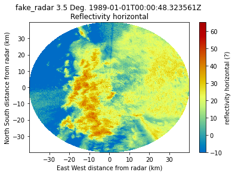

Creating a basic ingest of a NetCDF file#
### Sometimes a file might be in the netCDF file format but not conform to cfradial standards and can't
### be read with Py-ART. One way of working around this is to create a basic ingest, here is a hypothetically
### example, this file can be read with Py-ART, but lets act like it doesn't! :)
import netCDF4
import pyart
import numpy as np
## You are using the Python ARM Radar Toolkit (Py-ART), an open source
## library for working with weather radar data. Py-ART is partly
## supported by the U.S. Department of Energy as part of the Atmospheric
## Radiation Measurement (ARM) Climate Research Facility, an Office of
## Science user facility.
##
## If you use this software to prepare a publication, please cite:
##
## JJ Helmus and SM Collis, JORS 2016, doi: 10.5334/jors.119
# We will read the nc data with netCDF4.Dataset
data = netCDF4.Dataset("test_radar.nc")
# Lets get an idea of the shapes for rays and gates and the keys in this dataset.
data.variables.keys()
dict_keys(['time', 'range', 'azimuth', 'elevation', 'corrected_reflectivity_horizontal', 'reflectivity_horizontal', 'recalculated_diff_phase', 'specific_attenuation', 'unf_dp_phase_shift', 'mean_doppler_velocity', 'diff_phase', 'rain_rate_A', 'norm_coherent_power', 'dp_phase_shift', 'diff_reflectivity', 'proc_dp_phase_shift', 'copol_coeff', 'sweep_number', 'fixed_angle', 'sweep_start_ray_index', 'sweep_end_ray_index', 'sweep_mode', 'latitude', 'longitude', 'altitude', 'time_coverage_start', 'time_coverage_end', 'time_reference', 'volume_number', 'platform_type', 'instrument_type', 'primary_axis'])
data["azimuth"][:].shape
(400,)
data["range"][:].shape
(667,)
# Make a empty radar with the dimensions of the dataset.
radar = pyart.testing.make_empty_ppi_radar(667, 400, 1)
# Start filling the radar attributes with variables in the dataset.
radar.time["data"] = np.array(data["time"][:])
data["longitude"][:]
masked_array(data=-97.59416667,
mask=False,
fill_value=1e+20)
radar.latitude["data"] = np.array([data["latitude"][:]])
radar.longitude["data"] = np.array([data["longitude"][:]])
radar.longitude["data"]
array([-97.59416667])
radar.range["data"] = np.array(data["range"][:])
# Sometimes the dataset might just contain gate spacing, but if the gate spacing is uniform,
# there is a way around it, we see a gate spacing of 60 above.
radar.range["data"] = np.linspace(0.0, 60.0 * (667 - 1), 667)
# As you can see below we obtained the same range data. This isn't needed
# if the range data is present, but using gate spacing and ngates is another way around it.
radar.range["data"]
array([ 0., 60., 120., 180., 240., 300., 360., 420.,
480., 540., 600., 660., 720., 780., 840., 900.,
960., 1020., 1080., 1140., 1200., 1260., 1320., 1380.,
1440., 1500., 1560., 1620., 1680., 1740., 1800., 1860.,
1920., 1980., 2040., 2100., 2160., 2220., 2280., 2340.,
2400., 2460., 2520., 2580., 2640., 2700., 2760., 2820.,
2880., 2940., 3000., 3060., 3120., 3180., 3240., 3300.,
3360., 3420., 3480., 3540., 3600., 3660., 3720., 3780.,
3840., 3900., 3960., 4020., 4080., 4140., 4200., 4260.,
4320., 4380., 4440., 4500., 4560., 4620., 4680., 4740.,
4800., 4860., 4920., 4980., 5040., 5100., 5160., 5220.,
5280., 5340., 5400., 5460., 5520., 5580., 5640., 5700.,
5760., 5820., 5880., 5940., 6000., 6060., 6120., 6180.,
6240., 6300., 6360., 6420., 6480., 6540., 6600., 6660.,
6720., 6780., 6840., 6900., 6960., 7020., 7080., 7140.,
7200., 7260., 7320., 7380., 7440., 7500., 7560., 7620.,
7680., 7740., 7800., 7860., 7920., 7980., 8040., 8100.,
8160., 8220., 8280., 8340., 8400., 8460., 8520., 8580.,
8640., 8700., 8760., 8820., 8880., 8940., 9000., 9060.,
9120., 9180., 9240., 9300., 9360., 9420., 9480., 9540.,
9600., 9660., 9720., 9780., 9840., 9900., 9960., 10020.,
10080., 10140., 10200., 10260., 10320., 10380., 10440., 10500.,
10560., 10620., 10680., 10740., 10800., 10860., 10920., 10980.,
11040., 11100., 11160., 11220., 11280., 11340., 11400., 11460.,
11520., 11580., 11640., 11700., 11760., 11820., 11880., 11940.,
12000., 12060., 12120., 12180., 12240., 12300., 12360., 12420.,
12480., 12540., 12600., 12660., 12720., 12780., 12840., 12900.,
12960., 13020., 13080., 13140., 13200., 13260., 13320., 13380.,
13440., 13500., 13560., 13620., 13680., 13740., 13800., 13860.,
13920., 13980., 14040., 14100., 14160., 14220., 14280., 14340.,
14400., 14460., 14520., 14580., 14640., 14700., 14760., 14820.,
14880., 14940., 15000., 15060., 15120., 15180., 15240., 15300.,
15360., 15420., 15480., 15540., 15600., 15660., 15720., 15780.,
15840., 15900., 15960., 16020., 16080., 16140., 16200., 16260.,
16320., 16380., 16440., 16500., 16560., 16620., 16680., 16740.,
16800., 16860., 16920., 16980., 17040., 17100., 17160., 17220.,
17280., 17340., 17400., 17460., 17520., 17580., 17640., 17700.,
17760., 17820., 17880., 17940., 18000., 18060., 18120., 18180.,
18240., 18300., 18360., 18420., 18480., 18540., 18600., 18660.,
18720., 18780., 18840., 18900., 18960., 19020., 19080., 19140.,
19200., 19260., 19320., 19380., 19440., 19500., 19560., 19620.,
19680., 19740., 19800., 19860., 19920., 19980., 20040., 20100.,
20160., 20220., 20280., 20340., 20400., 20460., 20520., 20580.,
20640., 20700., 20760., 20820., 20880., 20940., 21000., 21060.,
21120., 21180., 21240., 21300., 21360., 21420., 21480., 21540.,
21600., 21660., 21720., 21780., 21840., 21900., 21960., 22020.,
22080., 22140., 22200., 22260., 22320., 22380., 22440., 22500.,
22560., 22620., 22680., 22740., 22800., 22860., 22920., 22980.,
23040., 23100., 23160., 23220., 23280., 23340., 23400., 23460.,
23520., 23580., 23640., 23700., 23760., 23820., 23880., 23940.,
24000., 24060., 24120., 24180., 24240., 24300., 24360., 24420.,
24480., 24540., 24600., 24660., 24720., 24780., 24840., 24900.,
24960., 25020., 25080., 25140., 25200., 25260., 25320., 25380.,
25440., 25500., 25560., 25620., 25680., 25740., 25800., 25860.,
25920., 25980., 26040., 26100., 26160., 26220., 26280., 26340.,
26400., 26460., 26520., 26580., 26640., 26700., 26760., 26820.,
26880., 26940., 27000., 27060., 27120., 27180., 27240., 27300.,
27360., 27420., 27480., 27540., 27600., 27660., 27720., 27780.,
27840., 27900., 27960., 28020., 28080., 28140., 28200., 28260.,
28320., 28380., 28440., 28500., 28560., 28620., 28680., 28740.,
28800., 28860., 28920., 28980., 29040., 29100., 29160., 29220.,
29280., 29340., 29400., 29460., 29520., 29580., 29640., 29700.,
29760., 29820., 29880., 29940., 30000., 30060., 30120., 30180.,
30240., 30300., 30360., 30420., 30480., 30540., 30600., 30660.,
30720., 30780., 30840., 30900., 30960., 31020., 31080., 31140.,
31200., 31260., 31320., 31380., 31440., 31500., 31560., 31620.,
31680., 31740., 31800., 31860., 31920., 31980., 32040., 32100.,
32160., 32220., 32280., 32340., 32400., 32460., 32520., 32580.,
32640., 32700., 32760., 32820., 32880., 32940., 33000., 33060.,
33120., 33180., 33240., 33300., 33360., 33420., 33480., 33540.,
33600., 33660., 33720., 33780., 33840., 33900., 33960., 34020.,
34080., 34140., 34200., 34260., 34320., 34380., 34440., 34500.,
34560., 34620., 34680., 34740., 34800., 34860., 34920., 34980.,
35040., 35100., 35160., 35220., 35280., 35340., 35400., 35460.,
35520., 35580., 35640., 35700., 35760., 35820., 35880., 35940.,
36000., 36060., 36120., 36180., 36240., 36300., 36360., 36420.,
36480., 36540., 36600., 36660., 36720., 36780., 36840., 36900.,
36960., 37020., 37080., 37140., 37200., 37260., 37320., 37380.,
37440., 37500., 37560., 37620., 37680., 37740., 37800., 37860.,
37920., 37980., 38040., 38100., 38160., 38220., 38280., 38340.,
38400., 38460., 38520., 38580., 38640., 38700., 38760., 38820.,
38880., 38940., 39000., 39060., 39120., 39180., 39240., 39300.,
39360., 39420., 39480., 39540., 39600., 39660., 39720., 39780.,
39840., 39900., 39960.])
radar.fixed_angle["data"] = np.array(data["fixed_angle"])
radar.sweep_number["data"] = np.array(data["sweep_number"])
radar.sweep_start_ray_index["data"] = np.array(data["sweep_start_ray_index"])
radar.sweep_end_ray_index["data"] = np.array(data["sweep_end_ray_index"])
radar.altitude["data"] = np.array(data["altitude"])
radar.azimuth["data"] = np.array(data["azimuth"])
radar.sweep_mode["data"] = np.array(data["sweep_mode"])
data["fixed_angle"][:]
masked_array(data=[3.5],
mask=False,
fill_value=1e+20)
# If elevation doesn't exist, but fixed angle doesn't, you can do
# fixed angle multiplied by nrays
radar.elevation["data"] = np.array(
[data["fixed_angle"][:]] * len(data["azimuth"][:])
).squeeze()
# With elevation and azimuth in the radar object, lets recalculate
# gate latitude, longitude and altitude,
radar.init_gate_altitude()
radar.init_gate_longitude_latitude()
radar.gate_longitude["data"]
array([[-97.59416667, -97.59416776, -97.59416886, ..., -97.59489769,
-97.59489879, -97.5948999 ],
[-97.59416667, -97.59415662, -97.59414657, ..., -97.5874659 ,
-97.58745576, -97.58744563],
[-97.59416667, -97.59414621, -97.59412575, ..., -97.5805231 ,
-97.58050246, -97.58048182],
...,
[-97.59416667, -97.59419881, -97.59423095, ..., -97.61560159,
-97.61563401, -97.61566644],
[-97.59416667, -97.59418877, -97.59421087, ..., -97.6089062 ,
-97.6089285 , -97.60895079],
[-97.59416667, -97.59417836, -97.59419005, ..., -97.60196382,
-97.60197561, -97.60198741]])
# Let's work on the field data, we will just do reflectivity for now, but any of the
# other fields can be done the same way and added as a key pair in the fields dict.
from pyart.config import get_metadata
ref_dict = get_metadata("reflecitivity_horizontal")
ref_dict["data"] = np.array(data["reflectivity_horizontal"])
ref_dict["data"]
array([[ -6.21875 , 1.34375 , -8.0078125, ..., -1.2109375,
1.1171875, 1.59375 ],
[ -6.2109375, 1.421875 , -8.5625 , ..., 2.34375 ,
-0.7109375, 0.609375 ],
[ -6.2109375, -0.5078125, -9.3828125, ..., -0.6875 ,
-2.328125 , -0.3203125],
...,
[ -6.21875 , 2. , -9.21875 , ..., 0.859375 ,
-6.6484375, -1.328125 ],
[ -6.2109375, 1.8515625, -10.25 , ..., 0.9375 ,
-1.75 , -0.0234375],
[ -6.21875 , 1.6328125, -8.2890625, ..., -2.546875 ,
-1.578125 , 0.6796875]], dtype=float32)
radar.fields = {"reflectivity_horizontal": ref_dict}
# Now what does that data look like plotted with Py-ART, also confirm if it works.
import matplotlib.pyplot as plt
display = pyart.graph.RadarMapDisplay(radar)
display.plot_ppi("reflectivity_horizontal")
plt.show()
